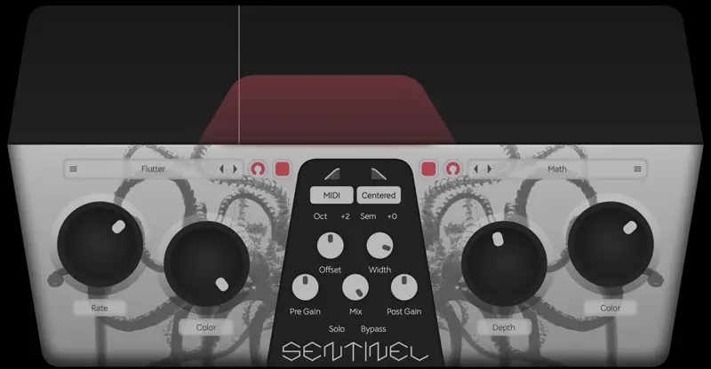
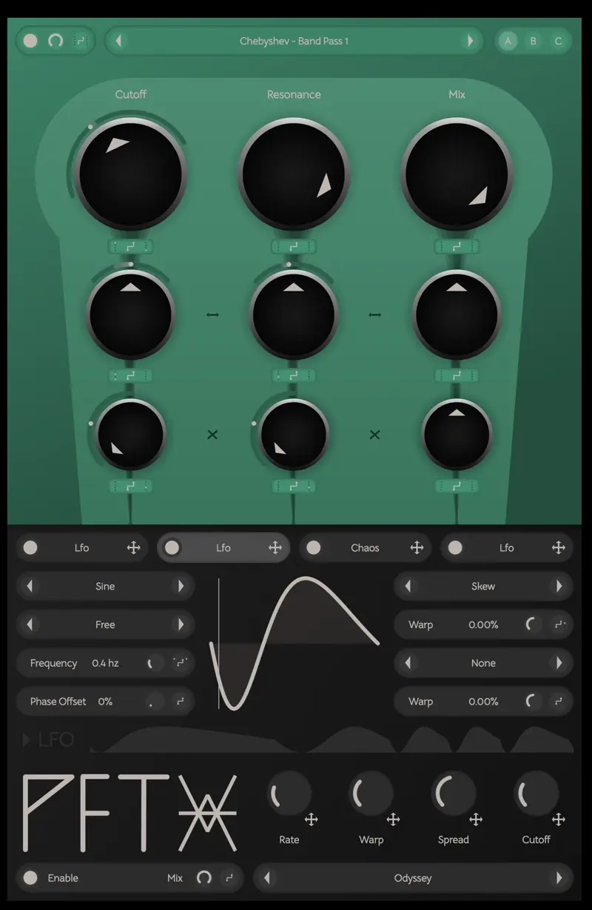
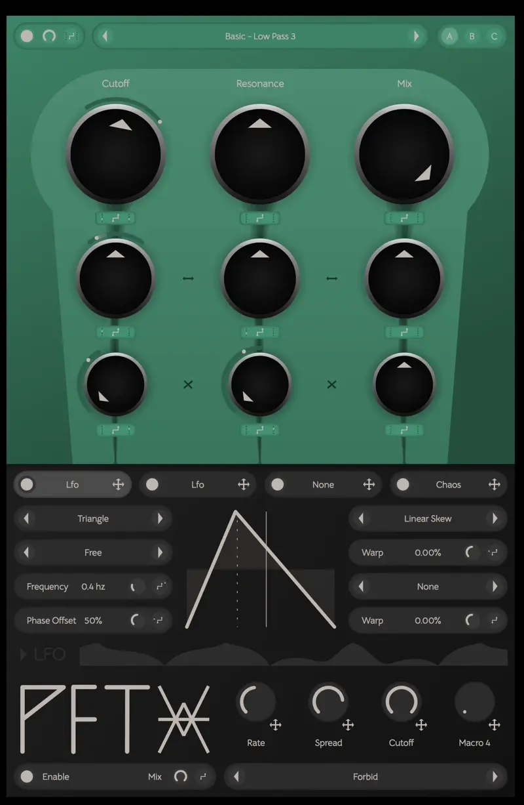
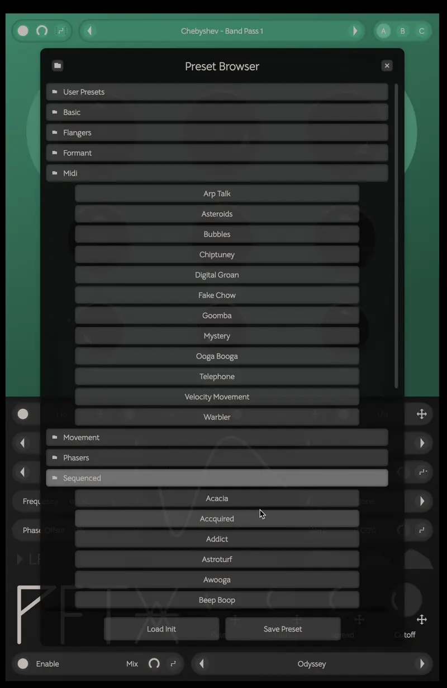
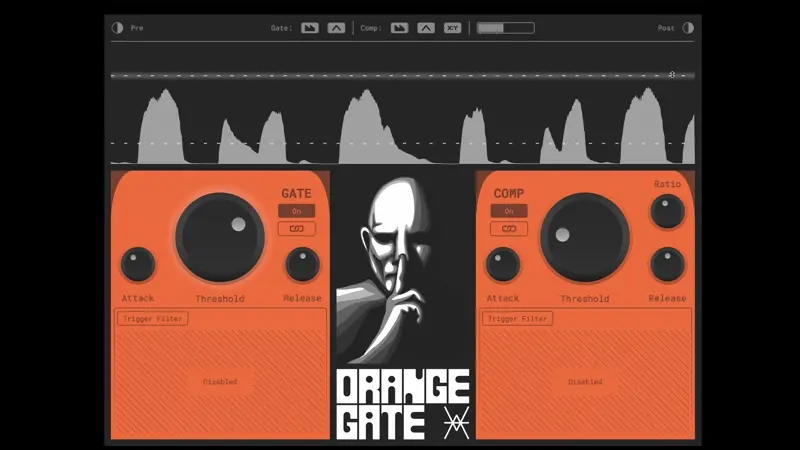
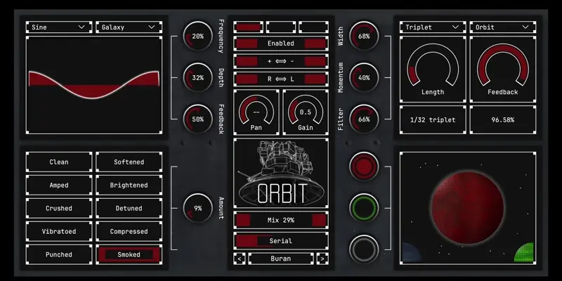
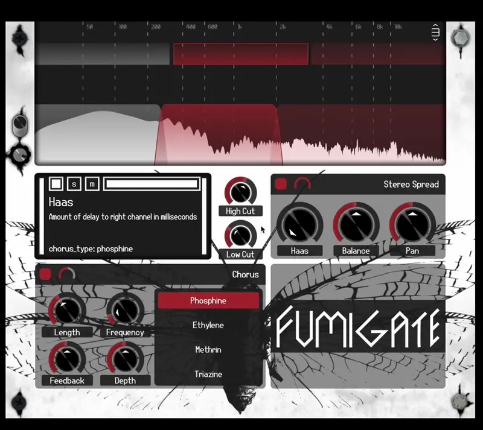

rami
What I do
I've been writing audio software for five years.
The past four years have been focused on the JUCE framework.
I created Vain Audio a few years back with
Bradly Landucci
partially as a creative outlet and partially as a learning experience.
Couple years later we've released seven fully featured audio plugins.
Check them out at VainAudio.com
This site serves as a general chronological summary of my cooler work.
Sentinel

Sentinel is a banded distortion plugin with MIDI key tracking.
This lets you apply distortion only to specific harmonics in your sound.
The initial idea came out of using Fruity Envelope Controller to manually set Ohmicide's band cutoffs when a note is played.
This was kinda sloppy and didn't work very well so I decided to refine the idea into a dedicated plugin.
Sentinel's distortion engine is a collection of effects with a simple modulation scheme applied to them.
Each selectable distortion type represents a signal flow and a set of weights that apply the modulators to the parameters.
Both large knobs, band high/low cutoffs, an LFO, and an envelope follower are used as modulators.
The whole modulation scheme is completely hidden from the user in the interest of ease of use, for now...
PFT
PanFilterTool (PFT) is filter plugin that allows for modulating filter parameters differently by audio channel. Seven modulators and four macros can be applied to nearly every available parameter. This allows you to effortlessly create dynamic sounds.
|  |
Assigning modulations to parameters is simple. Drag and drop a modulator onto an available
UI slider or open the modulation editor manually by clicking the button next to each slider.
I tried to communicate the functions of the modulation controls without too much text. Where possible, icons describe what an interactable UI element does. In any case PFT has a lot of tooltips. A confused user can hover over pretty much anything and get a description of what it is. Modulation is my favorite aspect of sound design. Its power and expressiveness is unmatched. Implementing a good one is something I've wanted to do since I picked up Massive in middle school (stealing is wrong). |
|
PFT comes with seven individual modulators.
Each modulator can be assigned to modulate any parameter in the plugin (besides its own).
Modulators and their parameters are allocated dynamically when the user chooses a new modulator type. If I was designing this part of the code again I would rethink how modulator parameters work. As it stands you have to assign each parameter to a macro if you want to change it from outside the plugin. Feels kinda clunky. |
 |
|  |
The preset browser is powered by a value tree that syncs its contents to the preset directory on the users disk.
This is built on top of the efsw library.
I used juce::ValueTree pretty heavily throughout the implementation of PFT's UI. The preset browser is no different. Everything from loading presets to making arrow key selections in the selection popup is accomplished using them. Getting everything right with integrating efsw into the project was one of the more tedious aspects of PFT. Lots of weird little async things and threading issues to iron out... |
PFT is the most complex and fully featured project I've worked on since launching Vain Audio. It took around a year from start to finish. During that time I made a lot of mistakes, fixed some of them, and learned a lot. If you have a minute, check it out. The demo is time unlimited.
Orange Gate

Orange Gate is an extremely simple gating and compression plugin. The focus here was on ease of use. Thresholds are shown overlayed on the waveform in the visualizer and can be adjusted directly.
Orbit

Orbit is a delay plugin with a focus on rotation.
Each delay can be set to 'orbit' mode which simulates the input signal being rotated around the listeners head.
It's styled to resemble old space race era control panels with a hint of modern visualization.
I implemented the UI and small amount of the parameter handling code for Orbit.
This plugin got me interested in symmetry within plugin UIs.
Each plugin I've worked on since then has been mostly symmetrical.
Fumigate
Fumigate is a multi band chorus and stereo expansion plugin. Split out up to five bands and adjust stereo width parameters on each.
|  |
The band splitter in Fumigate is templatized on a single BandCount static constant.
This means the total number of bands can be increased (theoretically) infinitely.
The insane compile times were really frustrating to work with.
But on the bright side the performance was slightly better.
Implementing the band splitter this way was as interesting as it was useless. |
Contact
Email: rami.hansen2@gmail.com